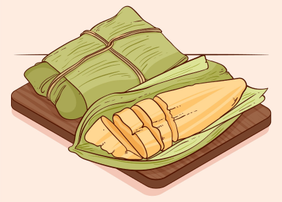

Pamonha
Prato típico com milho verde ralado
Porções:
0
Ingredientes
1 espiga de milho verde
1 colher de sopa de açúcar
1 colher de sopa de manteiga
Sal a gosto
Palha de milho (para embrulhar)
Modo de preparo
Descasque a espiga de milho e corte os grãos
Bata o milho, açúcar, manteiga e sal no liquidificador
Coloque a massa nas palhas de milho e feche bem
Cozinhe em água fervente por cerca de 40 minutos
Deixe esfriar e sirva